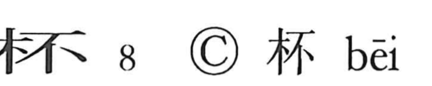

杯

Kun: sakazuki | On: hai
cup ・ wine cup
Explanation
A phono-semantic character: the left side 木 evokes a wooden vessel, while the right side 不 serves as the phonetic, giving the reading hai, as seen also in 胚 (“embryo”). Shirakawa further understands 不 as the image of a flower’s calyx, suggesting something small and rounded. Thus 杯 names a small sakazuki, a wine cup; in later usage the vessel was also written 盃. The expression 杯酒解怨 speaks of sharing cups of wine to dissolve resentment.